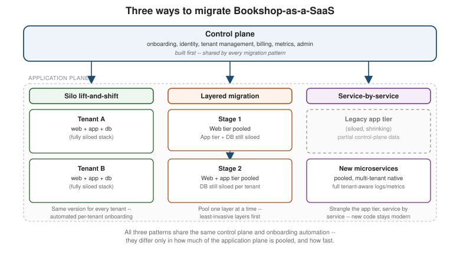

Migration Path: From Single-Tenant to Multi-Tenant SaaS
|
This content was generated with the assistance of AI and should be verified against the official documentation before being relied on in production. |
Migration Overview covers the discipline shared by every migration path in this section — the balancing act between business motivators and technical desires, the strangler fig, no big bang. This path uses all of it, but it is different in kind from the other three. Moving legacy stack to modern stack, monolith to modular monolith, or monolith to microservices changes how Bookshop is built. Moving Bookshop from single-tenant installed software to Bookshop-as-a-SaaS changes how Bookshop is sold, operated, and priced — one version running for every customer instead of one install per customer, a single onboarding experience instead of a sales-and-install cycle, and a support and billing model built around tenants instead of licenses. The code changes too, but the code is the smaller part of the story: this is a business-model migration that happens to require an architecture migration to be possible.
Two planes, one architecture
Every multi-tenant SaaS architecture splits cleanly into two halves that behave, evolve, and deploy independently:
-
The control plane is the single pane of glass used to operate the whole SaaS estate: tenant onboarding, identity, tenant management (configuration and lifecycle), metrics, billing, and the administration console a SaaS provider uses to run the business. None of this is multi-tenant functionality in the sense that Catalogue or Orders are — the control plane does not serve individual tenants' business needs, it serves the business of running tenants at all. It has its own release cadence, independent of the products it manages.
-
The application plane is where Bookshop’s actual features live: Catalogue, Orders, Payments, Shipping, Customers — the same five capabilities from Architectural Styles, now built (or migrated) to serve many tenants from shared infrastructure instead of one dedicated install per customer.
The control plane is built first, not last. It is tempting to start a SaaS project by designing the application plane — the features customers actually asked for — and to treat onboarding, identity, and billing as plumbing to bolt on once the product works. Every one of Golding’s guiding principles for a multi-tenant architecture (covered below) comes back to the same warning: build your multi-tenant foundation on day one. Standing up even a minimal control plane first — a way to create a tenant, authenticate a tenant user, and pass that identity into the application plane — forces every application-plane decision from that point on to be made with tenancy in mind, instead of retrofitted onto code that was never written to expect it.
Tenant context flows through every request
Once a tenant authenticates against the control plane’s identity service, that tenant’s identity travels with every subsequent request as tenant context — typically carried in a token issued at login. This is the one piece of plumbing every multi-tenant Bookshop service depends on:
-
Routing — a gateway or router uses tenant context to decide which instance of a service (or which silo) should handle a request, the same way API Gateway and Backends for Frontends routes requests by path today, except the routing key is now the tenant rather than the capability.
-
Logging — every log line Catalogue, Orders, or Payments emits carries the tenant it was working on behalf of, so an operator can filter the whole system’s logs down to one misbehaving tenant instead of guessing from timestamps.
-
Data access — every query is scoped to the requesting tenant’s data, whether that scoping happens at the schema, row, or database level (see Data partitioning and isolation below).
-
Isolation — tenant context is what any noisy-neighbor or blast-radius control checks before letting a request through, whatever isolation model the deployment model in use provides.
Bookshop’s own services do not just serve users anymore; every one of them serves a tenant’s user, and every one of them has to be written with that context in mind.
Silo, pool, and the models in between
Multi-tenant deployment models sit on a spectrum between two extremes:
-
Silo — each tenant gets a dedicated instance of a resource (compute, storage, or both). Nothing is shared, so there is no noisy-neighbor risk and isolation is close to free, but none of the SaaS economies of scale apply either: ten tenants mean ten times the infrastructure to run and ten times the deploys to automate.
-
Pool — tenants share the same running instance of a resource, distinguished only by tenant context. Infrastructure scales with aggregate load rather than tenant count, which is where most of SaaS’s cost and operational efficiency comes from, at the price of needing real isolation controls to stop one tenant’s behavior from affecting another’s.
Real SaaS architectures rarely pick one extreme for the whole system. The table below names the models Bookshop can mix and match, and when each one earns its place:
| Model | What it means | When to use |
|---|---|---|
Full-stack silo |
Every tenant gets its own complete stack — web tier, application tier, and database, all dedicated. |
Fastest path to a first SaaS offering (see Silo lift-and-shift), strict per-tenant compliance or data residency requirements, or tenants that simply will not accept sharing infrastructure. |
Full-stack pool |
Every tenant shares the same stack end to end, distinguished purely by tenant context. |
The default target once onboarding, identity, and isolation are mature — the model with the best economies of scale and the lowest operational surface area. |
Hybrid (premium siloed tier) |
Most tenants run in a shared pool; a premium tier gets a dedicated silo alongside it. |
A tiering strategy where some customers pay for (or require) dedicated infrastructure while the rest of the business runs pooled — the two models coexist side by side, not as a migration stage. |
Mixed mode (per service) |
Different services within the same application plane make independent silo/pool choices — Payments siloed for compliance while Catalogue and Shipping stay pooled, for example. |
A single full-stack choice does not fit every service’s risk, compliance, or noisy-neighbor profile; lets each capability pick the model its own requirements justify instead of forcing one answer on all of them. |
Pod |
Tenants are grouped into fixed-size pods, each pod an independently deployed, self-contained unit serving a subset of tenants, with every pod running the same version. |
Bookshop needs to shard tenants across regions or scaling domains without going fully siloed per tenant — a middle ground that still needs the same onboarding automation as a full-stack silo, applied per pod instead of per tenant. |
Whichever combination Bookshop picks, one constraint holds across every row: every tenant, in every model, runs through the same control plane, the same onboarding automation, and the same version of the software. The deployment model changes how infrastructure is shared; it never becomes an excuse for one-off, per-tenant customization.
Three migration patterns: Bookshop-as-a-SaaS
Bookshop today is the modernized monolith from Architectural Styles — one Spring Boot application, one PostgreSQL database, no tenancy anywhere in the code. Turning it into Bookshop-as-a-SaaS can follow any of three patterns, each trading speed against how modernized the result is.

Silo lift-and-shift
Take the existing bookshop stack essentially unchanged and drop a complete copy of it into a new tenant slot
every time a customer onboards — one full-stack silo per tenant, wired up by a fully automated onboarding
process in the control plane rather than a person following a runbook. Every tenant runs the same version; the
only new work is the control plane itself (onboarding, identity, tenant-aware routing) and enough instrumentation
inside bookshop to tag its logs and metrics with the requesting tenant.
This is the fastest and least invasive of the three patterns — it requires no changes to Bookshop’s application code beyond adding tenant context to logging and routing, so it is often the first pattern a team under time pressure reaches for. The cost shows up later: running one full stack per tenant means none of the pooled economies of scale apply, and every operational improvement (a security patch, a schema migration) has to roll out across every tenant’s silo rather than once.
Layered migration
Instead of migrating the whole stack at once, pool one architectural layer at a time, starting with whichever layer has the least tenant-specific logic bound into it. For a classic n-tier shape, that is usually the web tier: mostly request handling and delegation to the application tier, rarely deep in tenant-specific business rules, so it can often move to a shared, pooled deployment with little rewrite. Once the web tier is pooled, the application tier — and, further still, the database — can follow the same path if their own coupling to tenant-specific logic turns out to be shallow enough.
This is a compromise pattern: more invasive than silo lift-and-shift because it does require identifying which layers can safely pool and adjusting them, but it buys incremental cost and operational efficiency without committing to a full rewrite. Bookshop might pool its Thymeleaf-rendered web tier first, leaving the application tier and database siloed per tenant, then decide later whether pooling the application tier too is worth the additional rework.
Service-by-service migration
Strangle the application tier’s capabilities into pooled, multi-tenant-native microservices one at a time, the same extraction technique Migration Path: From a Monolith to Microservices already describes, now aimed specifically at capabilities that benefit most from pooling — Catalogue’s search traffic, say, ahead of a lower-traffic capability. Legacy code and newly extracted services run side by side for as long as the migration takes.
The rule that makes this pattern pay off: don’t compromise on the new microservices. Every service extracted
this way should be built as if it were greenfield — fully multi-tenant aware, emitting tenant-scoped logs and
metrics, integrating with the control plane from day one — rather than carrying forward shortcuts "just for
now." The first few extracted services set the pattern every later one follows; compromising on them means
re-doing the same modernization work twice. The harder problem this pattern introduces is integrating legacy
code with the control plane: the still-siloed, not-yet-extracted parts of bookshop have no native concept of
tenancy, so the control plane only gets full operational visibility into the capabilities that have already been
migrated. Bookshop has to invest in enough temporary instrumentation on the legacy side to keep the control
plane’s view of the system coherent while the migration is in progress — without over-investing in code that is
going to be replaced anyway.
Pros and cons side by side
| Pattern | Strengths | Weaknesses |
|---|---|---|
Silo lift-and-shift |
Fastest and least invasive; no application-code rewrite; gets Bookshop selling as SaaS the soonest |
No pooled economies of scale; every rollout repeats per tenant; furthest from a modernized target state |
Layered migration |
Moderate effort for real efficiency gains; incremental, so early layers pay off before later ones are tackled |
Only as good as the layer boundaries allow; pooled layers become new single points of failure; still not a modernized architecture |
Service-by-service migration |
Puts Bookshop on a direct path to a fully modernized, pooled architecture; each extracted service is independently deployable and scalable |
Most invasive; legacy/new integration overhead while both run side by side; slower time to market than lift-and-shift |
A phased approach
The three patterns are not mutually exclusive — they chain. A common path starts with silo lift-and-shift to get to market fastest, then layers in either a layered migration or a service-by-service migration once the business is running as SaaS and wants better economics; a team that starts with the layered model can still move on to service-by-service migration afterward for the layers that need full modernization. Not every migration has to end fully modernized either — if Bookshop’s tenants genuinely require siloed infrastructure for compliance reasons, stopping at silo lift-and-shift permanently can be the right call, not an unfinished one.
Where you start matters
Whichever pattern (or chain of patterns) Bookshop follows, the sequence of what gets built first matters as much as the pattern itself. The bias throughout this migration should be toward standing up the foundational, cross-cutting pieces before the migration touches much application code:
-
Identity — a way to create a tenant and a tenant user, and bind the user to the tenant.
-
Onboarding — the control plane flow that provisions whatever a new tenant needs (a silo, a pod, or just a tenant record in a pooled system), fully automated from the start rather than scripted by hand.
-
Tenant authentication — tenants log in and receive tenant context, connecting identity to every request that follows.
-
Tenant context in services — the application plane starts receiving and acting on tenant context, even if at first it only threads through to a handful of endpoints.
-
Tenant-aware logs and metrics — once services carry tenant context, they can publish it into logs and operational metrics, giving the control plane real, if initially thin, visibility into tenant activity.
Putting identity and onboarding first, ahead of any deep application-code changes, is a forcing function: it makes tenancy a first-class concern from the very first service touched, instead of something retrofitted once half the application plane has already been migrated without it.
Guiding principles
Three principles recur across everything above, worth stating on their own:
-
Avoid the tech-first trap. It is tempting to start a SaaS migration by debating identity providers, data partitioning schemes, and isolation mechanisms before anyone has answered the business questions — which markets, which tenant personas, how the offering will be tiered and priced. Those business decisions shape the architecture as much as any technical constraint; skipping straight to technology choices produces an architecture built for an offering nobody has actually defined yet.
-
There is no one-size-fits-all model. None of the deployment models or migration patterns above is a universal right answer. The correct combination depends on Bookshop’s compliance requirements, its tenants' tolerance for shared infrastructure, its existing stack, and how much time-to-market pressure the business is under — the same profile question this section’s Choosing: Monolith or Microservices? and Starting a New Project pages ask for every other decision.
-
Protect the multi-tenant principles. Once the business is running as SaaS, it will be tempted — often by a single large customer’s request — to carve out a one-off exception: a custom deployment, a bypassed onboarding step, a tenant that skips the shared version everyone else runs. Each exception erodes the very thing that makes SaaS economical: one version, one onboarding process, one operational model for every tenant. Defending that uniformity, even against reasonable-sounding one-off requests, is what keeps the SaaS model’s economies of scale intact.
Data partitioning and isolation
This page covers when and why to migrate to multi-tenant SaaS, and which deployment model and migration pattern to use to get there. It deliberately does not cover how tenant data gets partitioned and isolated at the database level — schema-per-tenant, database-per-tenant, or a shared schema with a discriminator column — because Bookshop’s Hibernate layer already documents that mechanics in depth: see Hibernate Multi-Tenancy for how each partitioning strategy is implemented, and its own trade-offs, once the deployment model chosen here calls for it.